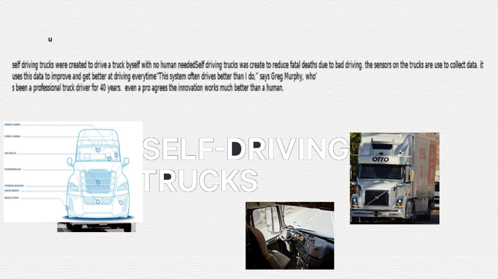

Enrique Site
AP Explore Task
2A)
The computing innovation I chose is self driving trucks The purpose of self driving trucks is to make a truck reach its final destination without supervision of a human. It works by having multiple sensors around the truck to tell the truck what movement is better for its current situation. This artifact shows how self driving trucks work with data
2B)
I created this artifact by collecting information i already knew or just had learn. The program I used to create this artifact is gimp First, I went to find websites that would answer your questions and collect information from those websites Then, I started writing useful information to know about self driving cars
2C)
Self-Driving trucks innovation does a lot. It drives the truck by itself with no type of human controlling it. Sensors tell it where to move and how to prevent a crash. The computer It is supposed to drive better and do less errors than a human. A benefit of Self-Driving truck is it might prevent fatal crashes. A potential harm caused by Self-Driving trucks is the truck wont react fast enough to prevent the crash and just do something dumb like swerve deeper into the crash. As for example if there was a girl about to get hit by the truck, the truck has calculated its option on what to do. It can either go off road and make a bigger crash or to simply just ran the girl over instead of making a worser crash. A potential impact on economy is many drivers would be laid off once people think the self driving truck are safe on the road. People should care because many people will lose their jobs by a machine. They are going to be left jobless and with no money
2D)
The Self driving truck innovation collects reinforcement data using its sensors. Reinforcement learning data is data about past decisions that helps make better and better decisions in the future. The Self driving truck computer processes past decision data to produce new decisions info by correcting past mistakes. Self driving truck info is useful to the user because it tells them how to correct a past issue with street signs. A data security concern is something to keep an eye on because people can totally abuse it for their own benefit. Data security is a concern because these scanner or computer on the car can be hacked and once they are hacked they have complete control of your car's motion.
2E)
(1) https://www.technologyreview.com/s/603493/10-breakthrough-technologies-2017-self-driving-tru cks/(2) http://dataconomy.com/2015/12/how-data-science-is-driving-the-driverless-car/
(3) https://spectrum.ieee.org/cars-that-think/transportation/self-driving/people-want-driverless-carswith-utilitarian-ethics-unless-theyre-a-passenger